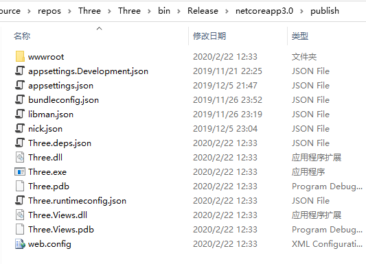
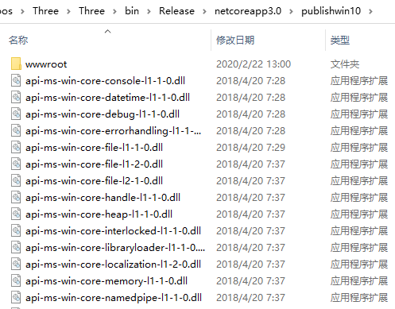
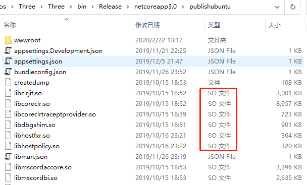
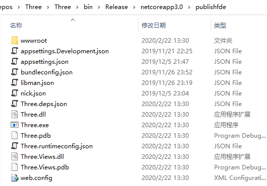

.NET Core 部署类型
- FDD，Framework-dependent（依赖框架）
- SCD，Self-contained（自包含）
- FDE，Framework-dependent executables（FDD和SCD混合）
Framework-dependent
优点
- 无需配置服务器的操作系统
- 部署的包很小
- .NET Core是共享的
缺点
- 只有在预先安装了.NET Core的情况下才能运行
- 可能会有兼容性问题
Self-contained
优点
- 可以对你使用的.NET Core版本进行单独隔离的控制
- 应用程序100%可在目标系统运行
- 不同.NET Core版本的应用可无干扰共存并运行
缺点
- 需要配置目标服务器操作系统
- 部署包比较大
Framework-dependent executables
- 自包含的部署
- 会使用以前安装过的.NET Core的资源
- 生成系统原生的可执行文件
部署示例
FDD
在VS 2019打开Three项目。项目右键，点击发布。发布目标选择文件夹，点击创建配置文件，然后重命名为Portable。
编辑配置文件。在设置中，部署模式选择框架依赖，目标运行时选择可移植，即FDD。保存后点击发布。
发布完成后点开目录，可以看到发布后的文件。

运行：
- 直接双击发布目录下的Three.exe运行。
- 在发布目录中运行cmd，输入命令dotnet Three.dll运行。
SCD
windows
在发布配置文件中点击新建，发布目标选择文件夹，修改路径，重命名为win10。
编辑配置文件，部署模式选择独立，目标运行时选择win-x64，即SCD。保存后点击发布。
发布完成后点开目录，可以看到，SCD发布后的文件与FDD发布后的文件有区别并且文件更多（包含了.NET Core运行时和相关依赖）。

运行：在发布目录中找到Three.exe并打开。
linux
在发布配置文件中点击新建，发布目标选择文件夹，修改路径，重命名为ubuntu。
编辑配置文件，部署模式选择独立，目标运行时选择linux-64，即SCD。保存后点击发布。
发布完成后点开目录，可以看到，发布文件中有一些linux系统下的文件。其他文件与windows方式无太大区别。

FDE
在发布配置文件中点击新建，发布目标选择文件夹，修改路径，重命名为Fde。
编辑配置文件，部署模式选择框架依赖，目标运行时选择win-x64，即FDE（目标运行时选择可移植就是FDD，选择具体操作系统就是FDE）。保存后点击发布。
发布完成后点开目录，可以看到如下文件，与FDD发布后的文件看不出区别。

该目录包含：
- 代码生成的程序集
- 不在.NET Core运行时的dll